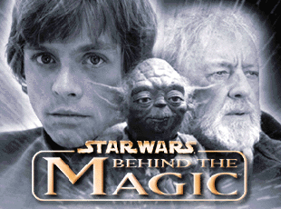
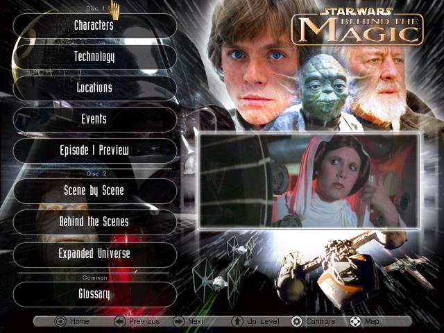

TELECOM SudParis

Star Wars : Behind The Magic
PRO3600 : Projet Informatique
John AO
Aurélien DUBOC
Etienne LAMOURET
Valentin PENCIOLELLI
Enseignant responsable : François TRAHAY
Date de soutenance : ??/05/2018 | Version 3 - 12/02/2018
Table des matières
- Introduction 3
- Cahier des charges 4
- Développement 5
- Analyse du problème et spécification fonctionnelle 5
- Conception préliminaire 5
1. Introduction
Ce document est le rapport du projet informatique portant sur l'encyclopédie Star Wars: Behind The Magic. Il est écrit en HTML, imprimé en PDF avec l'outil impression de Chromium et est versionné dans le dépôt
https://github.com/BehindTheMagic/PRO3600.
Star Wars: Behind The Magic est une encyclopédie Star Wars distribuée en 1998 sous forme de deux CD-ROM. Elle porte sur la trilogie originale et l'Univers Étendu, actuellement Légendes.
Aujourd'hui, cette encyclopédie ne fonctionne plus convenablement sur les systèmes actuels. Rendre disponible cette encyclopédie sous forme de site web permettrait d'en faciliter l'accès et la consultation, mais aussi de mutualiser les différentes versions existantes pour réaliser un site multilingue.
L'idée de ce projet en temps limité est de concevoir l'architecture du site et d'y ajouter les parties les plus intéressantes de l'encyclopédie, pour permettre les itérations futures au-delà du temps imparti.
Le dépôt du projet se trouvre dans l'organisation GitHub https://github.com/BehindTheMagic, et le site sera hébergé à l'adresse https://behindthemagic.github.io.
2. Cahier des charges
L’objectif est d'adapter l’encyclopédie Star Wars: Behind The Magic sous forme de site web. Comme l’encyclopédie est conséquente, nous allons nous focaliser sur quatre parties de l’encyclopédie en particulier pour le livrable final :
- Technologie : John
- Événements : Valentin
- Scène par Scène : Etienne
- Glossaire : Aurélien
Ces parties sont de tailles inégales, il est prévu de rerépartir les efforts de travail sur Technologie et Scène par Scène une fois les autres parties terminées.
Ce sont les quatre parties qui possèdent le plus d’interfaces utilisateurs différentes et diversifiées, qui seront en outre réutilisables pour les autres parties (comme Personnages ou Univers Étendu).

Nous voulons respecter l’aspect et les fonctionnalités originales de l’encyclopédie :
- Les interfaces utilisateurs doivent suivre les interfaces originales,
- La base de données textuelles, les images et les sons sont importés dans ce projet,
- Les questions Trivia sur l’univers Star Wars sont disponibles.
Nous souhaiterions aussi rajouter ces fonctionnalités :
- Proposer un site multilingue basé sur les différentes versions de Behind The Magic (disponible en anglais, français et allemand). [à l’étude pour la faisabilité compte tenu des délais]
- Pour le glossaire : surligner le texte recherché dans les articles où les termes sont trouvés, et afficher des informations supplémentaires présentes dans la base de données mais non affichées dans la version originale.
3. Développement
3.1 Analyse du problème et Spécification fonctionnelle
Les fonctionnalités à implémenter sont les suivantes :
- Architecture du site web pour facilement réaliser des vues (interfaces indépendantes), puis pour facilement naviguer entre elles ;
- Mise en place d'une page d'accueil, différente du menu principal de l'encyclopédie, pour le choix des langues et le lancement du logiciel.
- Réalisation de la vue statique "menu principal" et de la barre de navigation omniprésnte.
- Mise en place d'un système de mise en cache côté client des ressources, pour réduire les temps de chargement.
- Réalisation des parties citées dans le cahier des charges sous forme de plusieurs vues statiques et dynamiques chacune.
L'encyclopédie est composée de vues statiques et de vues dynamiques. Pour les vues statiques, celles-ci seront réalisées au plus proche de l'aspect original et contiendront les liens vers les autres vues de l'encyclopédie, en respectant l'ordonnancement original.
Pour les vues dynamiques, nous réaliserons une base de données dans un nouveau format par rapport à l'original, qui reprenda les données textuelles et pointera vers les ressources sonores et graphiques liées à chaque élément de l'encyclopédie. Le programme parcourra cette base de données afin de générer l'affichage en fonction du contenu fourni.
3.2 Conception préliminaire
Comme l'encyclopédie sera adaptée sous forme de site web avec plusieurs vues, et prévue pour être multilingue :
- Le site web sera statique sous forme de Single Page Application avec une librairie Javascript permettant de gérer des vues [à l’étude: Angular ou VueJS].
- Les images, musiques et vidéos seront converties et optimisées pour une utilisation sur le Web, aussi bien en terme de taille pour la bande passante que de codecs pour une utilisation sur tous les navigateurs.
- Nous utiliserons les interfaces de programmation i18n du navigateur (internationalisation, en anglais L10n: localization) pour ajouter des langues au projet.
Nous écrirons des scripts et des petits outils qui automatiseront et faciliteront la conversion des ressources originales afin de les utiliser sur le Web :
- Les fichiers sons peuvent être convertis manuellement avec Audacity, il doit être possible d'automatiser le procédé pour convertir tous les sons pour le Web.
- Les vidéos peuvent être converties en utilisant ffmpeg. Cela nécessite plusieurs étapes qui peuvent être automatisées pour s'assurer d'obtenir du premier coup des vidéos de bonne qualité, compatibles Web (MP4 codec H264 et MP3, échantillonage 4:2:0) et compressées.
- La conversion des données textuelles se fera avec un petit outil qui permettra d'indiquer la forme de la base de données que l'on souhaite obtenir.